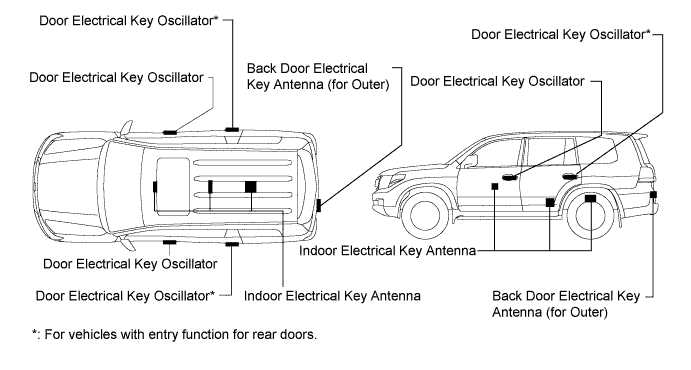

ENTRY AND START SYSTEM (for Entry Function) > PRECAUTION |
| 1.PRECAUTIONS FOR USERS WITH PACEMAKERS |
Weak electric waves are emitted from the key. If a pacemaker is being used, read the pacemaker instruction manual before using the entry and start system.

| 2.PRECAUTIONS FOR ENTRY AND START SYSTEM AND KEY |
The entry and start system does not operate in the following situations. If it does not operate at all, check that the following is not the cause.
The key cancel operation has been performed.
There is no key battery.
(Key indicator does not blink when key switches are pressed).
The key must be in the possession of the user.
(A requirement of the entry and start system. This is to make sure the user maintains a habit of carrying the key).
As the key only emits weak electric waves, if any of the following conditions are met, the detection area of the key may become smaller or the key may become undetectable.
The battery is depleted.
There are TV towers, electric power plants, broadcasting stations, gas stations or other areas of strong electric wave output nearby.
Wireless products such as cell phones, etc. are carried with the key.
The key is covered by or in contact with metal.
Electric wave type keyless entry systems are being operated nearby.
The key is placed near high-voltage, electric noise emitting equipment.
Film with some metallic content is stuck to the back glass.
Even if the key is in the vehicle exterior key detection area, the key may not operate properly due to the vehicle body design.
Even if the key is in the vehicle exterior key detection area, the key may not be properly detected if the key is near a window, a door handle or the center of a bumper.
Even if the key is in the vehicle interior key detection area, the key may not be properly detected if the key is on the instrument panel, on the rear tray, in the glove box or on the floor.
Depending on the way the key is held, the key may not operate properly.
| 3.PRECAUTIONS WHEN USING INTELLIGENT TESTER |
When troubleshooting the entry and start system using the intelligent tester with the engine switch off, connect the intelligent tester to the vehicle and turn any of the courtesy light switches on and off until communication between the intelligent tester and the vehicle begins (the interval between on and off should be less than 1.5 seconds).
(The reason the above procedure is necessary is that when the engine switch is off, the main body ECU may be in sleep mode. When the main body ECU is in sleep mode, communication with the intelligent tester is not possible).
After DTCs are all cleared, check if the trouble occurs again 6 seconds after the engine switch is turned on (IG).
| 4.PRECAUTIONS FOR EACH FUNCTION |
Precautions for the key:
The key is a precision instrument. Be sure to observe the following:
Do not drop or strike the key.
Do not keep the key in a high temperature area for a long time.
Do not use an ultrasonic washing machine to clean the key.
Keep the key away from magnets or magnetized items during use.
Do not attach any stickers to the key.
If a key is lost, clear all registered key ID codes and then reregister the remaining keys.
Precautions for the entry unlock function:
As the sensor is built into the backside of the outside door handle, the user must touch the backside part of the handle when performing the unlock function.
If the sensor is touched with gloved hands, the response of the door may be delayed.
During the entry unlock operation, if the door handle is pulled before the door unlocks, the unlock function cannot be completed. Confirm that the door has been unlocked before pulling the door handle to open the door.
Make sure that the doors are unlocked when touching the touch sensor on the outside door handle while the key is being carried.
If the doors cannot be unlocked, the certification ECU (smart key ECU assembly) orders the main body ECU to perform the door unlock operation 4 times at intervals of 0.75 seconds.
At this time, the door may not be unlocked because the handle is being pulled due to some mechanical reasons.
Be sure to return the door handle to its original position.
If the door cannot be opened by pulling the handle, perform the entry unlock operation again.
If the key is too close to the oscillator on the outside of the vehicle, the door may not be unlocked because the key cannot react to the strong wave output from the transmitter.
If the key is within the vehicle exterior detection area, the door can be unlocked even when a person other than the person carrying the key holds the door handle.
However, the doors other than the door that the codes match will not be unlocked.
(If the key is within the detection area of the driver side door outside the vehicle, the doors will be unlocked when the person carrying the key holds the driver side door handle. However, if any door handle other than that of the driver side door is held, the doors will not be unlocked).
If a door is not opened after the door unlock operation, the doors automatically lock after approximately 30 seconds.
If a large amount of water is applied to the door handle due to a car wash or heavy rain, the key being within the vehicle exterior detection area may cause the doors to be unlocked.
However, the doors will be locked again after approximately 30 seconds if a door is not opened.
If the key of the entry and start system is used while it is being carried with the key of another entry and start system, the time before the entry unlock operation will become more than usual. This is not a malfunction.
Precautions for the entry lock function:
When performing the entry lock operation, firmly press the lock switch on the outside door handle.
If pressed too quickly or lightly, the entry lock may not operate.
It is possible that signals output from the indoor electrical key antenna may leak through the window. Also, if the key is too close to a door oscillator, the oscillator output signals are too strong and the key cannot respond. As a result, when the key is near the vehicle interior (window, door handle), the entry lock function may not operate. Also, the key reminder warning buzzer may sound and the entry unlock operation may stop functioning. In this situation, move the key away from the vehicle interior (window, door handle), perform the entry lock operation and then perform the entry unlock operation.
Do not touch the lock switch while opening or closing the door.
If the lock switch is pressed when opening or closing the door while the key is being carried, the door ajar warning buzzer sounds (beeps outside the vehicle for 10 seconds).
If the key is on the instrument panel, rear package tray or floor, or in the glove box, the key reminder function may not operate and the key may be locked in the vehicle. Always carry the key.
If the key is outside the vehicle but is very close to a window or door handle (the ECU determines that the key is inside the vehicle) and the transmitter or mechanical key is used to lock the doors (entry lock is not used), entry unlock will not operate. To unlock the doors, perform a wireless door unlock operation. The entry lock function operates in this way to prevent the doors from being unlocked by the door oscillator (vehicle exterior) without the knowledge of the user. For example, when a user operates the wireless door lock operation from inside the vehicle, radio waves from a door oscillator may leak into the vehicle interior and the doors may unlock.
To allow the user enough time to check if the doors are locked after performing a door lock operation (entry lock function or wireless door lock operation), the entry unlock function will not be permitted for 3 seconds after the door lock operation.
Precautions for the entry ignition function:
To start the engine system, first depress the brake pedal firmly until the engine switch indicator illuminates green, and then press the engine switch.
Also, after performing the engine start operation, continue depressing the brake pedal until the engine has completely started.
When operating the engine switch, firmly press the switch. If the switch is pressed too quickly, power source control and engine system starting may not operate.
While driving the vehicle, continuously pressing the engine switch for 3 seconds or more will turn off the engine system. Do not touch the engine switch while driving, except in an emergency.
Do not touch the engine switch with oily hands.
If the vehicle has been in a hot location for an extended period of time, be careful when touching the engine switch. It may be very hot and lead to burns.
Take care to avoid spilling beverages on the engine switch. Keep all liquids away from the engine switch.
Do not use the engine switch if it seems to be sticking or feels abnormal.
The vehicle continually records the power source mode (off, on (ACC), on (IG), start). When the battery cable is disconnected and reconnected, the power source mode will return to the mode it was in before disconnecting the battery cable. Always turn the engine switch off before disconnecting the battery cable. When the vehicle battery is fully depleted, power is cut, and the power source mode before the power was cut is unknown, so be extremely careful.
Do not connect any electronic products to the ACC, IG1 or IG2 coil side wiring, as the vehicle power supply may be unable to be turned on, or other problems may occur.
When the key battery is depleted and the key is held up to the engine switch to start the engine system, the following warning alarms will sound.
With the engine switch on (ACC), the engine can be started by pressing the engine switch for 15 seconds without depressing the brake pedal.
Precautions for back door entry unlock function:
Even if the key is within the back electrical key antenna (for outer) detection area, the back door cannot be opened if the key is in the following areas:
Precautions for the battery built into the key and the vehicle battery:
The key is constantly checking for signals from the vehicle, which requires power from the built-in battery. The life of the battery is approximately 1 to 2 years depending on the usage conditions. Also, if the key is in contact with a cell phone while the user walks around (by putting them together into a pocket, etc.), the battery may significantly deplete. Be sure to replace the battery when its power is low. When replacing the battery, do not touch the inner circuit board or other inner parts.
The key is constantly checking for signals from the vehicle and using battery power, whether the key is being used or not. Even if the user is carrying 2 keys and only 1 key is used, both keys will consume battery power.
In order to communicate with the vehicle, the key is constantly checking for signals. Therefore if the key is in contact with a cell phone while the user walks around (by putting them together into a pocket, etc.), the battery may significantly deplete.
The key receives radio waves at approximately 134 kHz. If the key continuously receives strong, identical frequency waves, this may drain the key battery. Store the key at least 1 m (3.28 ft.) from TVs, personal computers, chargers for cell phone, etc. or other electrical products.
When the door is being locked, the vehicle battery is used to transmit radio waves. The battery may be fully depleted if the vehicle remains stopped for a long time. If the vehicle is not used for a long time, remove the battery from the vehicle or cancel the entry and start system.
When the door is being locked with the key in the detection area of a door oscillator, the battery is used for regular communication between the key and vehicle. If the vehicle is not used, keep the key away from the vehicle (more than 2 m (6.56 ft.)).
After disconnecting and reconnecting the battery cable, the entry unlock function may not operate. If this occurs, perform a wireless door unlock and lock operation.
When the battery is fully depleted and the engine does not start even after recharging, perform the following: 1) move the shift lever to P; 2) turn the engine switch off, and 3) open and close the driver door. Then start the engine.
When starting the engine system after the removal and installation of the vehicle battery, first perform the following: 1) open and close the driver door; and 2) wait 10 seconds or more. When an engine system start is attempted after the above procedures, the engine system will not start. However, this is not a malfunction. The engine system will start normally starting from the second attempt.
Precautions when using the remote start function:
When using the remote start, the entry unlock function can be operated. However, depending on the amount of engine noise and other factors, the door oscillator detection area may become smaller.
If the remote start is used, a door is unlocked, and the user enters the vehicle, the engine system will automatically turn off. After the engine system turns off, the engine system cannot be started for approximately 5 seconds.
Precautions for the entry unlock mode switching function:
Perform the entry unlock mode switching function within a 1 m (3.28 ft.) area around the vehicle or from inside the vehicle.
After changing modes, holding down the switch for 5 seconds or more will not change the mode. The switch must be released and then pressed again to change modes.